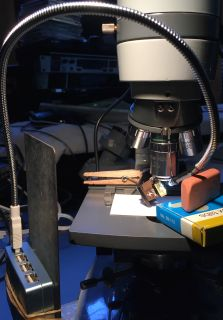
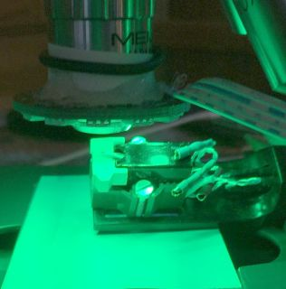
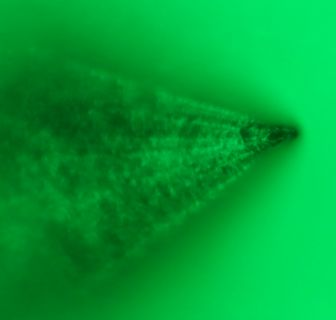
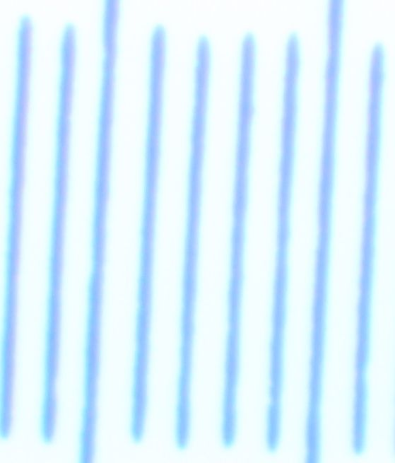

back

Photo Microscopy
 Excellent microscope introduction, resources and advice;
some optics basics
|


|
1/4 turn releases camera tube |
remove relay lens
|
insert eyepiece, find stylus
|
For larger o.d. eyepiece tubes, up to 1.25" (less than 32mm),
a 1.5-inch telescope clamp can work, e.g. here on a Cycloptic:
afocal with AO eyepiece and Canon 40mm f/2.8 STM
photo relay instead of eyepiece, then extension tubes and helicoid to focus on camera sensor
... perhaps with shims to fill gap between eye tube o.d. and clamp i.d.:
Eye tube adapters with typical T2 or M42 threads require camera-specific adapters.
A projection ocular and extension tubes should cost less than $100;
monocular microscope heads typically cost much less than trinoculars,
while having less light loss than binocular heads,
and used eye tube camera adapter clamps go for around $15.
Good complete used microscope with epi illumination and bright/darkfield objectives can be spendy.
Starting from scratch, consider Nikon 210mm B/D objectives in an Optiphot 66;
many were used for semiconductor electronics wafer inspection...
M42 to 30mm to 23.2mm eyepiece adapter
|
and Canon 6D over tube to AO trinocular head: Much more about trinocular heads here |

|
AO Series 10 - headless
Disappointed with EPIStar images, Series 10 configuration experiments resumed.
|  |
RGB ring light
Microscopes better resolve using blue illumination, since shorter wavelength and less opportunity for chromatic aberrations.A 40mm RGB LED halo ring fits around microscope objectives and can be supported by a 20mm i.d. o-ring.
| That o-ring below LED halo blocks some illumination... |
Bayer-filtered camera sensors have relatively sparse blue pixels, aliasing is liable for images with less than 4x oversampling. Dark wedge along the center of the above blue M55E stylus image is partly surface not in focus, but also stylus angle not 45 degrees (twisted cantilever). |
|
Glued a curled strip of business card as a half-cylinder to the halo backside... ...an o-ring secures LEDs to the objective:  |
Rotating the headshell in a clothespin brings more of the stylus upper surface nearly in focus,  and using green light instead of blue employs more camera pixels. |
calibration
AKA longitudinal chromatic aberration correctionMicroscope fine focus is indexed in microns, 200 per revolution.
Images of 0.01mm test slide (with cover slip) using MEIJI S.PLAN M 20X with Series 10 tube lens
and Olympus PE 2.5X; no matching corrections.
Numbers by colors are micon settings to focus that color:
red 144
| green 153
|
| white 148  |
blue 153 |
This is axial (or longitudinal) chromatic aberration.
A.O. 10X with NFK 3.3X
With an AO head, AO objectives are substantially corrected, better matching a Nikon CF PL relay lens.Headless, an NFK relay lens approximates AO tube lens corrections.
Finding the stylus with a microscope objective is easier using conventional oculars
than with camera Live View and relay lens.
Since the head has an infinity tube lens, this requires infinity objectives.
Since Series 10 AO Spencers often include a 10X objective, how well does one work on a stylus?
Because they are smaller in diameter than MEIJI and Leitz objectives
for which cardstock half-cylinders were epoxied to LED halos, a shim was cut from clear vinyl tubing.
This particular objective appears to have about 4mm working distance.
With halo illumination, a stylus tip is better illuminated with cartridge vertical centerline
rotated more nearly 60 than 45 degrees from horizontal, reducing surface in focus.
With NFK 3.3X relay lens and about 200mm projection distance,
full field of view with APS-C sensor is usefully in focus;
both of these images (downsampled, but not cropped) were captured after central focusing (zoomed Live View):


After visually confirming that minimal detail is lost by downsampling original (5472x3648) images by 3x,
then, given optics are NOT matched for color correction,
compared whether blue (left) or green (right) illumination yields more detail:


Approximate IrfanView color corrections settings for recovering dynamic range after grayscale conversion
and before 3x downsampling: brightness ~25, contrast ~99, gamma ~1.65